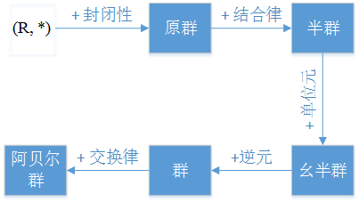

群论


群论是抽象代数的一个分支，主要研究一个被称为【群】的代数结构。
一个群 = 一个集合 + 一个二元运算。集合由一堆元素构成（比如 数字集合， 点集合， 符号集合）， 二元运算结合任意两个元素 a 和 b 形成了一个属于集合的元素。一个群应该满足下面4个属性:
- closure： 封闭性，二元运算的结果还是属于集合。
- associativity: 结合律, 举个例子： \( (a * b) * c = a * (b * c) \)
- identity element: 单位元，单位元跟二元运算有关，比如加法的单位元为0，乘法的单位元为1，\( a * e = e * a= a \).
- inverse: 逆元，\( a * a^{-1} = a^{-1} * a = e \)
如果除了上面4个条件之外，群还满足交换律，则群为交换群(commutative group)，又叫做阿贝尔群(Abelian group) .
举个例子： 椭圆曲线上面的【点集】和 【点的加法】 就构成了一个群。 两个点相加得到的点依然在椭圆曲线上，满足封闭性。\( (P_1+P_2)+P_3 = P_1 + (P_2+P_3) \) 满足结合律。 椭圆曲线的单位元是无穷远点，任何点和无穷远点相加，结果等于自身。椭圆曲线的逆元是一个点关于 x 轴对称的点，一个点和该点的逆元相加，结果等于无穷远点。
群的阶和集合元素的阶
群的阶就是集合中元素的个数。
集合元素的阶就是由元素反复进行二元运算生成的子集合的阶。如果二元运算是乘法，那么元素 a 的阶就是使得 \( a^m=e \) 成立的最小正整数 m 。
群的性质
- (消去律) \(a * b= a * c \Rightarrow b=c \)
- 方程 \( a * x =b \) 有唯一解， \( x \in G \)
- \( (a * b)^{-1}= b^{-1} * a^{-1} \)
- \( (a^{-1})^{-1} = a \)
判断子群
定理：H是G的非空子集，对于任意 \( a,b \in H \), 都有 \( a* b^{-1} \in H \), 则 H 是 G 的子群。
Proof:
- 先证单位元: 当 a=b 时，有 \( a * a^{-1} = e \in H \), 并且 \( a*e=e*a=a \),所以G的单元e属于集合H,并且e同时也是H的单位元。
- 再证逆元，我们需要证明任意一个\( a \in H \),它的逆元 \( a^{-1} \in H \), 这里使用\( e*a^{-1}=a^{-1} \in H \).故而 \( a^{-1} \) 不仅是a在G中的逆元，同时也是a在H中的逆元。
- 证明封闭性，封闭性需要证明\( a*b \in H \), 因为\( b^{-1} \in H \), 有 \( a*b=a*(b^{-1})^{-1} \in H \)
- 结合律：因为G是个群，它的子集的元素也必然满足结合律。
定理2: H是群G的非空子集，如果H是有限集，而且G的运算\( * \)在H上满足封闭性，则H是G的子群。
陪集(coset)
子群H是群G都子群，H可以用来把G分解成多个元素个数相等且互不相交的子集，这些子集被称为陪集。
若 \( a \in G \), 则
\[ aH :=\{a*h | h\in H\} \]
称为 H 关于 a 在 G 中的左陪集 (left cosets),同理，
\[ Ha :=\{ h*a | h\in H \} \]
称为 H 关于 a 在 G 中的右陪集(right cosets).
陪集的生成过程就是在群G中任意选一个元素a,将a与子群H的元素分别进行二元运算，得到的集合就是H关于a在G中的陪集。其中 a 叫做代表元(representative). 陪集的符号一般表示为 \([a]_H\).
陪集的性质：
- \(a \in [a]_H\), 代表元一定是陪集的元素，因为子集一定包含单位元，\(e*a=a*e=a\)
- \( [e]_H=H \), 代表元为单位元时，陪集和子集相等。
- \( a\in H \Longleftrightarrow [a]_H=H \), 代表元是子集的元素时，生成的陪集和子集相等。
证明： \(a \in H \), a 和 H 的元素进行二元运算时，由于H具有封闭性，二元运算的结果一定含于H,即 \( [a]_H \subseteq H \);
另一方面：\( \forall b \in H , a\in H \)
\( a^{-1}* b \in H \), 将\( a^{-1}*b \)看做一个整体，与 a 进行二元运算
\( a*(a^{-1}*b) \in [a]_H \Rightarrow b\in [a]_H \Rightarrow H \subseteq [a]_H \Rightarrow [a]_H=H \) - \( [a]_H =[b]_H \Leftrightarrow a^{-1}*b \in H (或 b^{-1}*a \in H ) \)
证明： \( H=\{ e, \cdots, h, \cdots \} \)
\( [a]_H=\{ a,\cdots,a*h,\cdots \} \)
\( [b]_H=\{b,\cdots,b*h,\cdots\} \)
因为H关于a的陪集等于H关于b的陪集，所以 b 必定等于 a 与 H 中某个元素进行二元运算，即
\( b=a*h \Rightarrow a^{-1}*b=h \)
又因为 h 是 H 中的元素
所以 \( a^{-1}*b \in H \)
拉格朗日定理(Lagrange's theorem)
定理： G 是有限群， H是G的任意子群，则 \[ ord(H) | ord(G) \]
证明：因为H的所有陪集\( [a_1]_H,[a_2]_H,\cdots,[a_n]_H \)其实是对G的划分，且每个陪集的元素个数相等(等于子集的阶),所以\( |G|=k|H| \), 其中k表示通过H生成的陪集的个数。
举个例子： 群 \( Z_6= \{0,1,2,3,4,5\} \)
子群 \( 3Z_6=3\times \{0,1,2,3,4,5\}=\{0,3\} \)
陪集:
$ [0]{3Z_6}=[3]{3Z_6}={0,3} $
$ [1]{3Z_6}=[4]{3Z_6}={1,4} $
$ [2]{3Z_6}=[5]{3Z_6}={2,5} $
正规子群(normal subgroup)和商群(quotient group)
定义：设N是群G的子群，如果对于 $ \forall a\in G $,都有 $ aN=Na $,称N为G的正规子群。
给定一个正规子群N,搭配上群G的元素，就可以构造出一些陪集，这些陪集集中起来，就形成了一个集合，这个集合表示如下： $$ G/N={ [a]_N | a\in G } $$ 这个集合的元素是陪集，给这个集合搭配上如下的二元运算： $$ [a]_N [b]_N := [ab]_N $$ 就构成了商群，$(G/N,*)$称为群G在模N下的商群。
商群的研究范围： 商群的元素是一堆陪集，这些陪集里面除了N(平凡陪集)以外，其他的陪集的元素都不属于正规子群，故而，商群的研究范围主要就是正规子群之外的那些元素。
商群的阶： $[G:N]=\frac{|G|}{|N|}$
商群的性质在阿贝尔群下的表现： 阿贝尔群的子群都是正规子群(通过交互律可证)，阿贝尔群的任意子群都可以构造商群，阿贝尔群的子群构造的商群也是阿贝尔群。
陪集和剩余类等价： 在整数群里，陪集和剩余类本质上是一个东西，都是等价关系下的等价类。$ Z/nZ={[0],[1],\cdots,[n-1]}=Z_n $
数学映射的定义

群同态(group homomorphism)

定义:
设群 $(G,)$ 和群 $(G',\Box)$, 如果函数 $ f: G \rightarrow G' $ 对于 $ \forall a,b \in G $ , 都有
$$ f(ab)=f(a)\Box f(b) $$
则称 f 为 $ (G,*) $ 到 $(G',\Box)$ 的群同态。
群同态的作用：
根据定义可知，群同态在元素映射以后，元素之间的运算规律仍然得到了保持。有的群比较容易分析，比如常见的整数模n加法群，有的群分析起来就不太方便，这时候就可以利用群同态的特效通过简单群来分析麻烦群。另外一个用途就是用于同态加密计算，只要映射函数不可逆，就可以把一个群的二元运算映射到同态群上面计算，达到加密计算的效果。
同态像(homomorphic image):
G中的元素经过f映射到G'后，得到的可能只是G'的子集，也就是说，G'中的某些元素，在G中可能找不到原像。因此，就有了同态像的概念，又称为像，像指的是G'中能找到原像的那些元素构成的子集(f的同态像)。表示为$ Im\ f $
同态核(homomorphic kernel):
G中的元素经过f映射后等于G'的单位元的元素构成同态核，表示为$ Ker \ f $
阿贝尔群的m次方映射(m-power mape):
G是阿贝尔群
$$ G \underrightarrow f G $$ $$ a \rightarrow f(a)=a^m $$
$ f(a_b)=(a_b)^m=a^m *b^m= f(a)*f(b) $
$ Im\ f=G^m $
$ Ker\ f=G{m}:={a\in G | a^m =e} $ \
群同态的性质
- $f(e)=e'$, (e和e'分别为群G和G'的单位元), 单位元映射后仍然是单位元
证明：$ f(e) \Box e' = f(e) = f(e*e)= f(e)\Box f(e) $ - $ f(a^{-1})=f(a)^{-1}, \forall a \in G $, 互为逆元的元素的像依然互为逆元。
证明：$ f(a^{-1}) \Box f(a) = f(a^{-1}*a)=f(e) $ - H是G的子群，则 f(H) 是 G'的子群，子群的像依然是子群。
证明：$ \forall a,b \in H, f(a), f(b) \in f(H) $, 则
$ f(a)\Box f(b)^{-1}= f(a)\Box f(b^{-1})= f(a*b^{-1}) \in f(H) $ - 如果像是映射群的子群，那么原像就是就是G的子群。同态核$ Ker\ f $是G的子群，同态像$Im\ f$是G'的子群。
- $ f(a^m)=f(a)^m $
证明： $ f(a^m)= f(a \cdots a)= f(a)\Box f(a) \Box\cdots\Box f(a)= f(a)^m $ - 同态核$ Ker\ f $是正规子群。
证明：要证明同态核是正规子集，只需要证明它的左右陪集相等。
$ \forall a \in G $, 有 $ a (Ker f)={ah| h \in Ker f } $
$ \exists h' \in Ker f $, 有 $ ah=h'a $
令$ aha^{-1}= h' \in Ker f $, 因为 rhs 属于同态核，只需要证明 lhs 属于同态核即可，则只需要证明 lhs 经过映射后等于e'。
$ f(ah*a^{-1})=f(a)\Box f(h)\Box f(a^{-1})= f(a)\Box e' \Box f(a^{-1})= f(a) \Box f(a^{-1})= e' $
群同构(group isomorphism)
如果一个群同态是个双射函数，那它就叫群同构。G与G'同构，记为$ G\cong G' $. 同构的群，它们本质上就是同一个群，因为它们拥有相同的性质，比如G的生成元对于的像也是G'的生成元。
第一同构定理(first isomorphism theorem): 第一同构定理又叫【基本同态定理】(FHT,fundamental homomorphism theorem). \
定理： 设群$ (G,*) $ 和群$ (G', \Box) $, $f: G \rightarrow G' $是群同态(同态核是 Ker f, 同态像 Im f), 则 $$ G/Ker f \cong Im f $$ 同态核构造的商群 $ {[a]_{Ker f} | a\in G} $ 和同态像同构, 这个群同构就是把商群里面的陪集映射成代表元的像，代表元的像和具体的f相关。
循环群
- 任意无限循环群都只有2个生成元
- 任意循环群都是阿贝尔群
证明： $ \forall a,b \in$, 设 $ a=g^r,b=g^k $, 则
$ ab=g^r g^k= g^{r+k}=g^{k+r}=g^k * g^r $ - 有限循环群都阶是n,则生成元g的阶也是n
- 正整数 d|n, n阶有限循环群恰有唯一的d阶子群。
证明：（存在性）d|n, 元素 $ g^{\frac{n}{d}} $ 阶为d,因为使得 $(g^{\frac{n}{d}})^x= e $ 成立的最小的x为d.
则子群 $ <g^{\frac{n}{d}}> $ 的阶是d, 故而存在阶为d的子群 $ <g^{\frac{n}{d}}> $.
(唯一性)反证法。 假设存在另一个d阶的循环子群$ <g^k> $, 则 $ (g^k)^d =e \rightarrow n|kd \rightarrow \frac{n}{d}|k $, 也就是说 k 是 $ \frac{n}{d} $的倍数，那么 $ g^k $ 就可以由 $g^{\frac{n}{d}}$ 生成，所以 $ g^k \in <g^{\frac{n}{d}}> $, 有 $<g^k>$ 是 $ <g^{\frac{n}{d}}> $ 的子群，因为二者的阶都为d,所以两个群是同一个循环群。
举个例子： 循环群G的阶是15，15的正因子为 1，3，5，15，所以，G一共有4个子群，它们的阶分别为 1，3，5，15.
- n阶有限循环群 $
, \forall k \in Z $,有 $g^k$ 的阶是 $ \frac{n}{gcd(n,k)} $
证明: 假设 $g^k$ 的阶为m, 则 $g^{km} = e \rightarrow n|km $,
则 km 既是 k 的倍数，同时也是 n 的倍数， 有 $ km=lcm(k,n)=\frac{nk}{gcd(k,n)} $
所以 $ m=\frac{n}{gcd(k,n)} $ - 当 $ gcd(k,n)=1 $ 时，$ g^k 的阶为 \frac{n}{gcd(k,n)}=n, g^k $ 就是循环群的生成元。与 n 互素的 k 一共有 $ \phi(n) $ 个，即生成元的个数。当已知一个生成元g时，求出所有与n互素的k,那么 $ g^k $ 就是所有的生成元。
- 素数阶的群必然是(有限)循环群。
证明：设G是群，且 $|G|=p $, p是素数。
设 $a\in G, 且 a \not= e $, a的阶是k( $a^k=e $ )
则 $k | p $, 因为p是素数，所以k要么等于1，要么等于p，由因为 $a^k \not= e $, 所以 k=p.
也就是说 a 的阶为p, a就是群G都生成元，所以G是（有限）循环群。
该定理可以归纳概括为：素数阶的群一定是循环群，它的生成元是任一非单位元。 这个定理在密码中经常用来构造循环群。
举个例子: $Z_5 = {0,1,2,3,4}, ord(Z_5)=5 $
取 a=2, 则有循环子群为 $H={a,a^2,...,a^{n-1}, a^n=e}$, 即 $ (2, 2^2=4, 2^3=1, 2^4=3, 2^5=0) $，这里的指数是加法模5的一种模拟表示方法。
利用同构举一反三:
同构的群本质上就是同一个群，它们的结构性质完全一样。
- 无限循环群：同构于 $Z$
- n阶有限循环群：同构于 $Z_n $
证明： 设无限循环群为 $
$\forall z,z' \in Z, f(z+z')=g^{z+z'}=g^z *g^{z'}=f(z)*f(z') $
所以这个映射是一个群同态，而且同态像里面的每一个 $g^z$ 都有原像 z, 所以这个映射是一个满同态。
根据同态核为两种情况证明单射：\
- 如果同态核只包含单位元 0 即 $Ker f={0} $, 那么 $f(0)=g^0=e $, 映射是一个单射。即是满射又是单射，所以映射是一个群同构，因为是 Z 和循环群 $
$同构，可见这个循环群是个无限群。这就说明，任何无限循环群都同构于Z,它们都是同一个东西，Z的所有性质都可以用于无限循环群。 - 如果同态核除了单位元0还包含其他元素，因为Z的子群都满足格式 $nZ$, 而同态核也是Z的子群，则有 ${0} \subset Ker f=nZ \quad (n为正整数) $， 根据第一同构定理，可以利用群同态构造一个群同构，$Z/Ker f= Z/nZ= Z_n \cong Im f=
$, 又因为 $Z_n$是个有限群，所以循环群也是一个有限群，$Z_n$ 有n个元素，循环群也就有n个元素。也就是说，任何n阶有限循环群都同构于 $Z_n$.
- G是n阶有限循环群，d是n的正因子，G里的d 阶元素一共有 $\phi (d) $ 个。
证明： 因为 $G \cong Z_n $, 设 $a \in G $, 求G的d阶元素个数，就是求当 $ a^d=e $ 时，满足条件的a的个数。
也就是求 $Z_n $ 中， 当 $dz=0 $ 时，满足条件的z的个数， 也就是求子群 $Z_n{d} := {a \in Z_n |da=0} $中的d阶元素的个数(也是这个循环群的生成元的个数)，又因为 $Z_n{d} $ 是个d阶有限循环群，所有它与 $Z_d$ 同构，所以问题就等价于求 $Z_d$ 的生成元的个数，而 $Z_d 一共有 \phi(d) $ 个生成元。
$Z_n^* $的性质
$Z_n^* = {a|a=0,\cdots,n-1, \quad gcd(a,n)=1} $ 是乘法群.
乘法阶(multiplicative order):
定义： $a \in Z, gcd(a,n)=1 $, 设k是满足
$$ a^k \equiv 1 \pmod{n} $$
的最小正整数，称k是a在模n下的乘法阶，记为 $ord_n(a)$, 其实这里的k同时也是元素a的阶。
原根(primitive root):
定义： $g \in Z, gcd(g,n)=1 $, 如果 $ord_n(g)=\phi(n) $， 则称g是模n下的原根。
则 $g^{ord_n(g)} \equiv g^{\phi(n)} \equiv 1 \pmod{n} $
原根存在的条件:
设 p 是奇素数，e是正整数
$n=1,2,4,p^e,2p^e $ 时，模n下存在原根。
RSA中 $n=p\times q $,p,q是不相等的素数，所以RSA的模数下就不存在原根。
存在原根的 $Z_n^*$ 是循环群： 如果模n下存在原根，原根的阶是 $\phi(n)$， 而 $Z_n^$ 的阶也是 $\phi(n)$, 所以原根g就是 $Z_n^$ 的生成元，此时，$Z_n^$ 就是循环群。 明显 $Z_p^$ 就是一个循环群。
如何找原根(生成元)
根据拉格朗日定理，子群的阶整除原群的阶。 则有 $\forall a\in Z_n^*, ord_n(a) | \phi(n) $
a是原根 $\rightarrow ord_n(a)=\phi(n) $
对 $\phi(n) $做素因子分解有：$\phi(n)= p_1^{e_1} \cdots p_r^{e_r} $
当a不是原根时，假设a的阶为 $ord_n(a)=d $, 根据拉格朗日定理有 $d|\phi(n), d<\phi(n) $,
$$d|\phi(n) \Rightarrow \exists p_j, d|\frac{\phi(n)}{p_j} \Rightarrow \exists q, dq=\frac{\phi(n)}{p_j} $$
上面的推导时因为 d 是 $\phi(n)$ 的因子，且 $d<\phi(n)$，那d就一定等于 $\phi(n)$ 的唯一质数分解式子中的某些素数的某些指数次的组合。
因为a的阶为d,则有 $ a^d \equiv 1 \pmod{n} \Rightarrow a^{\frac{\phi(n)}{p_j}} \equiv (a^d)^q \equiv 1 \pmod{n} $
所以 $a是原根 \Leftrightarrow a^{\frac{\phi(n)}{p_i}} \not\equiv 1 \pmod{n}, i=(1,\cdots,r) $
故而，找 $Z_n^*$原根的算法如下：
- 唯一质数分解 $\phi(n)= p_1^{e_1}p_2^{e_2}\cdots p_r^{e_r} $
- 任意选择一个 $a \in Z_n^* $, 即任意选择一个与n互质的数
- if $a^{\frac{\phi(n)}{p_i}} \not\equiv 1 \pmod{n}, i=(1,2,\cdots,r) $
$ \quad output \quad a $
else goto 2
举个例子：
求 $Z_{19}^$ 的所有生成元。
$\phi(19)=19-1=18=2\times 3^2 $
$ p_1=2, p_2=3 $
$ \frac{\phi(n)}{p_i}= { \frac{18}{2}=9, \frac{18}{3}=6 } $
任意选择与19互质的数2, 计算 $a^{\frac{\phi(n)}{p_i}}={2^9 \not\equiv 1 \pmod{19}, 2^6 \not\equiv 1 \pmod{19} } $
所以 2 是 $Z_{19}^$ 的一个生成元。
由于在循环群 $Z_n$ 中, 群的阶为n，如果已知一个生成元为g, 当 gcd(k,n)=1 时，$g^k$的阶为 $\frac{n}{gcd(n,k)}=n $, 则 g^k 也是群 $Z_n$的生成元, $Z_n^*$ 与 $Z_n$ 同构，直接套用 $Z_n $的性质来求解所有的生成元。
$Z_{19}^$的阶为$\phi(19)=19-1=18$， 与18互质的数有 $ k={1,5,7,11,13,17} $, 则
$
2^1 \equiv 2 \pmod{19}, \
2^5 \equiv 13 \pmod{19}, \
2^7 \equiv 14 \pmod{19}, \
2^{11} \equiv 15 \pmod{19} \
2^{13} \equiv 3 \pmod{19} \
2^{17} \equiv 10 \pmod{19} \
$
也就是说 ${2,3,10,13,14,15} $ 都是 $Z_{19}^$ 的生成元。
验证一下：
$
3^9 \equiv 18 \pmod{19}, 3^6 \equiv 7 \pmod{19} \
10^9 \equiv 18 \pmod{19}, 10^6 \equiv 11 \pmod{19} \
13^9 \equiv 18 \pmod{19}, 13^6 \equiv 11 \pmod{19} \
14^9 \equiv 18 \pmod{19}, 14^6 \equiv 7 \pmod{19} \
15^9 \equiv 18 \pmod{19}, 15^6 \equiv 11 \pmod{19} \
$
离散对数的性质
- $a \equiv g^r \pmod{n} \Leftrightarrow log_g(a) \equiv r \pmod{\phi(n)} $
证明： 令 $x=log_g(a) $, 则 $a\equiv g^x \pmod{n} $
$\Leftrightarrow g^x \equiv g^r \pmod{n}$
在循环群中生成元生成的元素相等，说明x和r之间的距离正好差了一个循环(生成元的阶 $\phi(n)$)，也就是说x,r在循环下同余
$\Leftrightarrow x \equiv r \pmod{\phi(n)}$
$\Leftrightarrow log_g(a) \equiv r \pmod{\phi(n)}$ \ - 根据上面的性质可以联想到 $g^r \pmod{n} = g^{r \bmod \phi(n)} \pmod{n} $, 因为生成元进行指数次运算，这些指数如果在生成元的阶下同余的话，得到的结果是相等的。
设 gcd(b,n)=1, $y=log_g(b) $， m是正整数，h也是原根:
- $log_g(ab) \equiv log_g(a)+log_g(b) \pmod{\phi(n)} $
证明:
$ ab \equiv g^x g^y \equiv g^{x+y} \pmod{n} \ \Rightarrow log_g(ab) \equiv x+y \pmod{\phi(n)} \ \Rightarrow log_g(ab) \equiv log_g(a)+log_g(b) \pmod{\phi(n)} \ $ - $log_g(a^m) \equiv m \times log_g(a) \pmod{\phi(n)} $
proof:
$ a^m \equiv g^{xm} \pmod{n} \ \Rightarrow log_g(a^m) \equiv mx \pmod{\phi(n)} \ \Rightarrow log_g(a^m) \equiv m \times log_g(a) \pmod{\phi(n)} \ $ - $log_h(a) \equiv log_h(g) \times log_g(a) \pmod{\phi(n)} $
proof:
设 $g\equiv h^t \pmod{n}, t=log_h(g), 0 \leq t \leq \phi(n) $
$ a \equiv g^x \pmod{n} \ \Rightarrow a\equiv h^{tx} \pmod{n} \ \Rightarrow log_h(a) \equiv tx \pmod{\phi(n)} \ \Rightarrow log_h(a) \equiv log_h(g) \times log_g(a) \pmod{\phi(n)} \ $
Carmichael funtion 推导的结论
Carmichael function 表示为 $\lambda(n)$, n的唯一质因子分解为 $n=p_1^{e_1}p_2^{e_2}\cdots p_r^{e_r} $
则 $\lambda(n)=lcm[\lambda(p_1^{e_1}), \lambda(p_2^{e_2}),\cdots,\lambda(p_r^{e_r})] $.
Carmichael funtion在 $Z_n^*$ 的结论：
$Z_n^$ 的阶是 $\phi(n)$, $Z_n^$的元素的最大阶为 $\lambda(n)$.
置换
一个有限集合 S 到自身的双射称为 S 的一个置换，集合 \( S={a_1,a_2,\cdots,a_n} \)上的置换可以表示为 \[ f=\begin{pmatrix} a_1,a_2,\cdots,a_n \\ a_{p_1},a{p_2},\cdots,a{p_n} \end{pmatrix} \] 意为将 \( a_i \)映射为 \( a_{p_i} \), 其中 \( p_1,p_2,\cdots,p_n \) 是 \( 1,2,\cdots,n \)的一个排列。显然 S 上的所有置换的数量为 n!。
所以置换的本质就是一个双射函数。
对称群 (symmetric group) 和 置换群 (permutation group)
给定一个集合 M, 集合M的所有可逆置换构成集合 N, N 关于可逆置换的复合（函数的复合也可以看作是两个函数间的二元运算）满足封闭性，结合律，有单位元 (恒等置换，即每个元素映射到它自己)，有逆元 (交换置换表示中的上下两行)，因此构成一个群，称为 M 的对称群，记为\( Sym(M) \).
\( Sym(M) \)的任一子群称为 M 的置换群。
如果 M 是包含 n 个元素的有限集， 称其到自身的可逆映射为 n阶置换 (permutation)， 其对称群称为 n阶对称群(sysmmetric group of degree n).
举个例子： 假设我们有集合 M={1,2,3}, 所有的置换就是对集合M做全排列，结果如下：
\(
\begin{pmatrix}
1,2,3 \\
1,2,3
\end{pmatrix}
\begin{pmatrix}
1,2,3 \\
2,1,3
\end{pmatrix}
\begin{pmatrix}
1,2,3 \\
3,1,2
\end{pmatrix}
\begin{pmatrix}
1,2,3 \\
1,3,2
\end{pmatrix}
\begin{pmatrix}
1,2,3 \\
2,3,1
\end{pmatrix}
\begin{pmatrix}
1,2,3 \\
3,2,1
\end{pmatrix}
\)
以上这六个置换就是就是对称群的元素集合，集合的运算就是对映射函数进行复合操作，单位元就是第一个元素（恒等置换），逆元就是把每一个置换表达中的上下两行交换得到的新的映射函数，而且每次进行复合操作得到的映射函数都是上面的置换之一，且复合函数满足结合律。